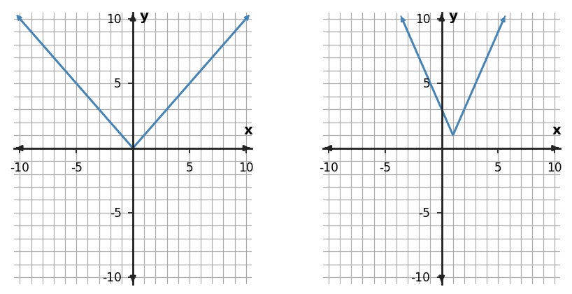

Absolute Value Functions and Piecewise Thinking
Function Analysis, Modeling, and Synthesis
Use structure, representations, and context as evidence—not decoration.
Learning Target
Students will analyze and model situations involving absolute value functions.
- I can design an absolute value or piecewise representation for situations with distance, change in direction, or two-part behavior.
- I can apply key features of absolute value graphs to interpret vertex, intercepts, and rate of change.
- I can predict outputs and intervals from absolute value and piecewise rules in context.
Vocabulary / Key Notation Preview
absolute value · piecewise function · vertex · interval · rate of change
Sort the vocabulary. Write each vocabulary word in the column that best matches what you know right now. You may move a word later.
| Know for sure | Recognize | Don't know yet |
|---|---|---|
What's to Come
DO NOT SOLVE IT YET.
Circle anything familiar, underline symbols, labels, conditions, data, or features that seem important, and write short notes about what you think may matter later.
A courier is at a target location marked 0 on a route. Its signed position changes from negative to positive as it passes the target. Sketch or describe how distance from the target should behave, explain why distance cannot be negative, and propose a rule that turns signed position into distance.
Let's Get Started
Skim the section. Record what catches your attention before you read closely.
| What I noticed | |
|---|---|
| What I predict | |
| What I wonder |
READ IN SHORT CHUNKS.
Annotate the words and visuals together. Underline evidence, circle or highlight bold vocabulary, label arrows, measurements, or important features, connect sentences to figures, and jot short questions or connections in the margins.
I can design an absolute value or piecewise representation for situations with distance, change in direction, or two-part behavior.
Absolute value is a natural model whenever a quantity is a distance from a target. Signed position tells which side of a reference point you are on; absolute value removes the sign and keeps the distance. That is why $|x-h|$ is zero at $x=h$ and increases as you move away in either direction. The graph forms a V because the distance grows linearly on both sides of the target.
A piecewise function is useful when the rule itself changes from one interval to another. Instead of forcing one formula to describe every input, a piecewise rule states which expression applies in each region. This matches real situations with different rates before and after a threshold, different prices in different ranges, or different motion on separate parts of a trip.
Absolute value and piecewise thinking are closely connected. The basic function $|x|$ can be understood as $x$ when $x\ge0$ and $-x$ when $x\lt0$. In both representations, the important question is which behavior applies for a given input and how the pieces meet. Designing a model means identifying the target or breakpoint, the rule on each side, and the context that makes the split meaningful.
- Why can absolute value represent distance even when the signed position is negative?
- What information must a piecewise rule include besides the formulas themselves?
- How is the basic absolute-value function an example of piecewise behavior?
$d=|x-h|$
The minimum distance is 0 at $x=h$.
$|x|=x$ when $x\ge0$
$|x|=-x$ when $x\lt0$

Example 1: Model Distance from a Target
A thermostat target is 68°F. Write an expression for the number of degrees a temperature $T$ is away from the target.
You Try It 1: Model Distance from a Target
A thermostat target is 72°F. Write an expression for the number of degrees a temperature $T$ is away from the target.
Example 2: Choose the Correct Piece
For $f(x)=\begin{cases}2x-4,&x\lt 1\\3x+5,&x\ge 1\end{cases}$, find $f(4)$ and identify which rule applies.
You Try It 2: Choose the Correct Piece
For $f(x)=\begin{cases}2x+3,&x\lt 2\\-x+9,&x\ge 2\end{cases}$, find $f(1)$ and identify which rule applies.
I can apply key features of absolute value graphs to interpret vertex, intercepts, and rate of change.
For $y=a|x-h|+k$, the vertex is $(h,k)$. It is the point where the two linear pieces meet. When $a\gt0$, the vertex is a minimum; when $a\lt0$, it is a maximum. The value $|a|$ controls how quickly the graph rises or falls away from the vertex, so it determines the magnitude of the rate of change on each side.
The two sides have opposite slope signs because the graph changes direction at the vertex. If $a=2$, the left side has slope $-2$ and the right side has slope $2$. If $a=-3$, the graph opens downward: the left side rises with slope $3$ toward the vertex, and the right side falls with slope $-3$. This piecewise slope view explains the V or upside-down V rather than treating it as a picture to memorize.
Intercepts and context add meaning. The y-intercept is the output at $x=0$, and x-intercepts occur where the modeled quantity reaches zero. In a cost or distance situation, a change in rate may create a piecewise rule instead of a symmetric absolute-value graph, so the graph’s key features should always be interpreted in light of the rule and the situation.
- For $y=4|x-2|-1$, what is the vertex?
- Why do the left and right sides of an absolute-value graph have opposite slope signs?
- What does the sign of $a$ tell you about whether the vertex is a minimum or maximum?
| Vertex | $(h,k)$ |
|---|---|
| Opening | up if $a\gt0$; down if $a\lt0$ |
| Right-side slope | $a$ |
| Left-side slope | $-a$ |
| Axis of symmetry | $x=h$ |
Example 3: Read Vertex and Rates
For $y=-2|x+1|+5$, state the vertex and describe the rate of change on each side of the vertex.
You Try It 3: Read Vertex and Rates
For $y=-3|x-4|+2$, state the vertex and describe the rate of change on each side of the vertex.
Example 4: Build a Two-Rate Cost Rule
A delivery fee is 6 dollars plus 2 dollars per mile for the first 5 miles, then 16 dollars plus 1 dollar per mile beyond 5 miles. Write a piecewise cost rule for distance $d\ge0$.
You Try It 4: Build a Two-Rate Cost Rule
A parking garage charges 5 dollars plus 3 dollars per hour for the first 4 hours. After 4 hours, the cost is 17 dollars plus 1.5 dollars for each additional hour. Write a piecewise cost rule for parking time $h\ge0$.
I can predict outputs and intervals from absolute value and piecewise rules in context.
Evaluating a piecewise rule begins with the condition, not the formula. First locate the input on the number line of intervals; then use only the expression assigned to that interval. Endpoint symbols matter because $x\lt2$ and $x\le2$ do not include the same inputs. A correct substitution into the wrong piece is still a wrong evaluation.
Tables can reveal absolute-value structure through symmetry. When outputs increase by the same amount as inputs move equal distances away from a central x-value, the center is a candidate vertex. From there, the vertical shift comes from the vertex output and the scale factor comes from the amount y changes per one unit away from the vertex.
Context places a second restriction on any rule: the mathematical formula may have a large algebraic domain, while the realistic domain is smaller. A trip-time model should not be used before the trip begins or after it ends. A pricing rule may only apply to nonnegative quantities. Good predictions come from both selecting the correct piece and checking that the input belongs to the modeled situation.
- What should you check before substituting into a piecewise formula?
- How can symmetry in a table help locate the vertex of an absolute-value model?
- Why can the algebraic domain of a formula be larger than the reasonable domain of a model?
- Locate the input in the listed intervals.
- Check the endpoint symbol: $\lt,\le, \gt,\ge$.
- Use only the formula for that interval.
- Interpret the output in context.
- Verify the input is inside the realistic domain.
Example 5: Build an Absolute-Value Rule from a Table
Use the symmetric table to locate the vertex and identify an absolute-value rule with scale factor 2.
| $x$ | -4 | -3 | -2 | -1 | 0 |
|---|---|---|---|---|---|
| $y$ | 5 | 3 | 1 | 3 | 5 |
You Try It 5: Build an Absolute-Value Rule from a Table
Use the symmetric table to locate the vertex and identify an absolute-value rule with scale factor 2.
| $x$ | -2 | -1 | 0 | 1 | 2 |
|---|---|---|---|---|---|
| $y$ | 4 | 2 | 0 | 2 | 4 |
Example 6: Restrict a Model to a Realistic Domain
A model gives distance from a trailhead as $d(t)=|2t-10|$ for a 7-hour trip. State a reasonable domain and explain why the algebraic rule should not be used for all real $t$.
You Try It 6: Restrict a Model to a Realistic Domain
A model gives distance from a trailhead as $d(t)=|5t-20|$ for a 5-hour trip. State a reasonable domain and explain why the algebraic rule should not be used for all real $t$.
Summary
- Absolute value models distance from a target and can be understood as two linear pieces.
- For $y=a|x-h|+k$, use the vertex, opening, left/right rates, and intercepts to interpret the graph.
- Evaluate piecewise rules by selecting the correct interval first, and restrict models to a realistic domain.
Common Mistakes
| Mistake | Better move |
|---|---|
| Treating absolute value like one ordinary line | Account for the change in direction at the vertex. |
| Using the wrong piece | Check the interval condition before substituting. |
| Ignoring endpoint/domain restrictions | Read inequality symbols carefully and connect the model to the situation. |